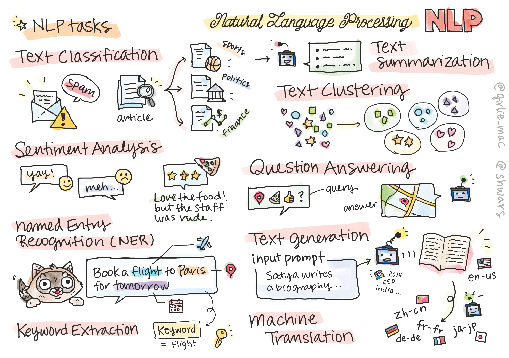

自然语言处理

在本节中，我们将重点使用神经网络处理与自然语言处理 (NLP) 相关的任务。我们希望计算机能够解决许多NLP问题：
- 文本分类 是关于文本序列的典型分类问题。例如，将电子邮件消息分类为垃圾邮件或非垃圾邮件，或将文章分类为体育、商业、政治等。此外，在开发聊天机器人时，我们通常需要理解用户想要表达的意思——这种情况下我们处理的是意图分类。在意图分类中，我们通常需要处理许多类别。
- 情感分析 是一种典型的回归问题，我们需要给语句的正面/负面意义赋予一个数字（情感）。情感分析的一个更高级版本是基于方面的情感分析（ABSA），其中我们将情感归因于语句的不同部分（方面），例如在这家餐厅，我喜欢烹饪，但氛围糟透了。
- 命名实体识别 (NER) 是指从文本中提取特定实体的问题。例如，我们可能需要理解在短语我需要明天飞往巴黎中，单词明天指的是日期，巴黎是一个地点。
- 关键词提取 类似于NER，但我们需要自动提取对句子意义重要的词，无需针对特定实体类型进行预训练。
- 文本聚类 在我们希望将类似的句子组合在一起时非常有用，例如，在技术支持对话中组合类似的请求。
- 问题回答 是指模型回答特定问题的能力。模型接收一个文本段落和一个问题作为输入，需要提供问题答案所在的文本位置（有时需要生成答案文本）。
- 文本生成 是指模型生成新文本的能力。这可以被视为基于某些文本提示预测下一个字母/单词的分类任务。先进的文本生成模型，如GPT-3，能够通过一种称为提示编程或提示工程的技术解决其他NLP任务，如分类。
- 文本摘要 是指我们希望计算机“阅读”长文本并将其摘要为几句话的技术。
- 机器翻译 可以被视为一种将一种语言中的文本理解和生成另一种语言文本的结合。
最初，大多数NLP任务是使用传统方法（如语法）解决的。例如在机器翻译中，解析器用于将初始句子转换为语法树，然后提取更高级别的语义结构来表示句子的意义，并基于这种意义和目标语言的语法生成结果。如今，许多NLP任务更有效地使用神经网络解决。
许多经典的NLP方法在自然语言处理工具包 (NLTK) Python库中有实现。网上有一本很棒的NLTK书，涵盖了如何使用NLTK解决不同的NLP任务。
在我们的课程中，我们将主要关注使用神经网络进行NLP，并在需要时使用NLTK。
我们已经学习了使用神经网络处理表格数据和图像。与这些类型的数据不同，文本是一个长度可变的序列，而图像的输入大小是提前知道的。虽然卷积网络可以从输入数据中提取模式，但文本中的模式更加复杂。例如，否定词可能被许多单词任意分隔（例如我不喜欢橙子 vs. 我不喜欢那些大而色彩鲜艳的美味橙子），这仍应被解释为一个模式。因此，为了处理语言，我们需要引入新的神经网络类型，如循环网络和transformer。
安装库
如果您使用本地Python安装程序来运行本课程，您可能需要使用以下命令安装所有用于NLP的必需库：
对于PyTorch
pip install -r requirements-torch.txt
对于TensorFlow
pip install -r requirements-tf.txt
您可以在Microsoft Learn上尝试使用TensorFlow进行NLP。
GPU警告
在本节中，在某些示例中，我们将训练相当大的模型。 * 使用启用了GPU的计算机：建议在启用了GPU的计算机上运行笔记本，以在处理大型模型时减少等待时间。 * GPU内存限制：在GPU上运行可能会导致GPU内存不足的情况，尤其是在训练大型模型时。 * GPU内存消耗：训练期间消耗的GPU内存量取决于各种因素，包括小批量大小。 * 最小化小批量大小：如果遇到GPU内存问题，请考虑减少代码中的小批量大小作为潜在解决方案。 * TensorFlow GPU内存释放：旧版本的TensorFlow在一个Python内核中训练多个模型时可能不会正确释放GPU内存。为了有效管理GPU内存使用，您可以配置TensorFlow仅在需要时分配GPU内存。 * 代码包含：要设置TensorFlow仅在需要时分配GPU内存，请在笔记本中包含以下代码：
physical_devices = tf.config.list_physical_devices('GPU')
if len(physical_devices)>0:
tf.config.experimental.set_memory_growth(physical_devices[0], True)
如果您有兴趣从经典的ML角度学习NLP，请访问这套课程
本节内容
在本节中，我们将学习：